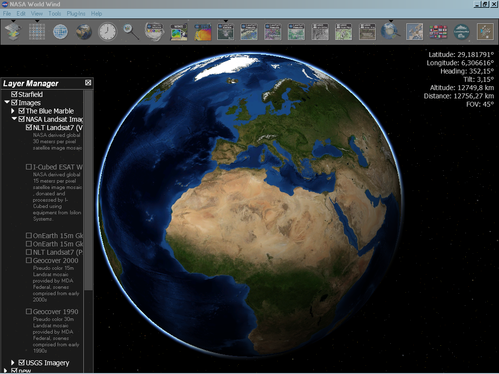

A geomatika magába foglalja a geoinformatikát, de a geomatika inkább a felmérésre koncentrál (surveying). A geoinformatika magja az olyan alapvető technológia, amely támogatja a térbeli adatok megszerzési, elemzési és megjelenítési folyamatait. Mind a geomatika és geoinformatika tartalmazza és nagymértékben függ a geodézia elméleti és gyakorlati vonatkozásaitól.
A földrajz- és földtudományok egyre nagyobb mértékben támaszkodnak a digitális térbeli adatokra. Ezeket az adatokat távérzékelt képek alapján érik el, amelyeket a földrajzi információs rendszerek (GIS) elemeztek, és láthatóvá tették papíron vagy a számítógép képernyőjén.
A geoinformatika egyesíti a térinformatikai elemzést és modellezést, a térinformatikai adatbázisok fejlesztését, információs rendszerek tervezését, az ember-számítógép interakciót és a vezetékes és vezeték nélküli hálózati technológiákat. A geoinformáció elemzéséhez a geoinformatika geokomputációt (geocomputation) és geovizualizációt (geovisualization) használ. A geoinformatika ágai közé tartozik még.
A tevékenységek jellege szerinti elkülönítésében három főbb alkalmazási csoportot különböztethetünk meg. Az első csoportba tartoznak a hosszabb idő óta fejlesztett technológiák, amelyek a térinformatikával a közös eljárásaik és adatszolgáltatásuk révén vannak kapcsolatban. Ilyen a földmérés és más mérnöki tevékenységek, ahol a technológiai fejlődéssel hétköznapi lett a digitális mérőállomás, a lézerszkenner, a GNSS technológia használata. Ez a folyamat jellemzi a térképészet témakörét is; itt a térképkészítés, az automatikus térképezés fejlesztése emelhető ki. A távérzékelés a felvételező érzékelők fejlesztésének köszönhetően lett progresszív irányvonal.
Második kategória a menedzsment és a döntéselőkészítés csoportja, mely a legtöbb alkalmazást tudhatja magáénak. Legtipikusabb témakörei a természeti erőforrások nyilvántartása és adatkezelése, a tulajdon ellenőrzése és az adózás miatt fontos földhivatali-nyilvántartás, illetve a műszaki GIS egyik legnagyobb alkalmazóihoz tartozó közmű-nyilvántartás.
A térinformatika gyakorlati alkalmazásai természetesen máshogy is csoportosíthatók. Jó példa a tudományos tevékenységhez kötődő, természeti jelleg szerinti kategorizálás. A környezeti tényezőkhöz igazodó meteorológiai, talajtani, domborzati adatfeldolgozások mellett beszélhetünk összetettebb, a környezetérzékenységet értelmező elemzésekről is